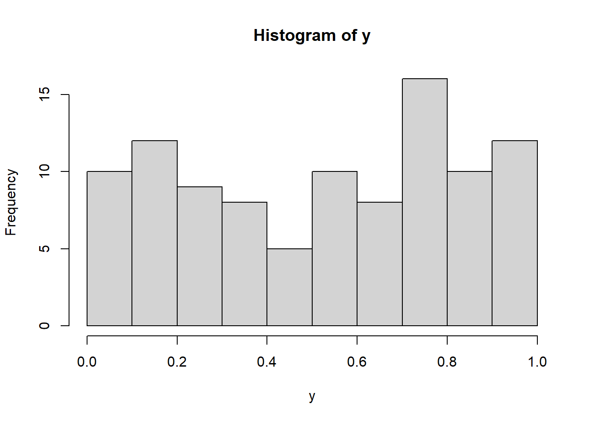
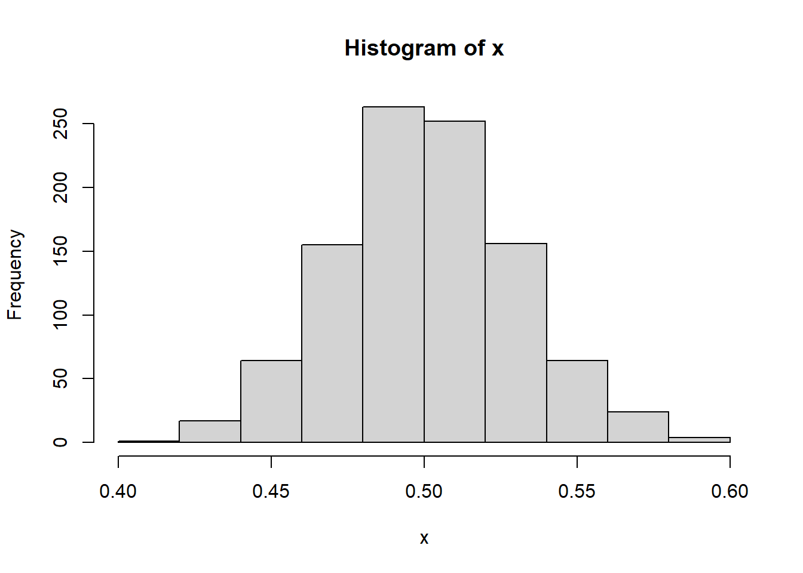

Chapter 11 Advanced topics
The following covers some advanced topics on Programming in R that I usually do not cover in the first introduction to R. Most of this is very useful when you want to simulate data in R, e.g., for power simulations.
11.1 Programming resources
Some more advanced resources for R programming are the following:
Advanced R https://adv-r.hadley.nz/
Happy Git and GitHub for the useR https://happygitwithr.com/
R Programming for Research https://geanders.github.io/RProgrammingForResearch/
Building reproducible analytical pipelines with R https://raps-with-r.dev/
Data Skills for Reproducible Science https://psyteachr.github.io/msc-data-skills/
11.2 Writing Functions
Functions in R consist of
- a name
- a pair of brackets
- the arguments (none, one, or more)
- a return value (visible, invisible, )
Arguments are passed
either without name (in the defined order)
-> positional matching
or with name (in arbitrary order)
-> keyword matching
Even if no arguments are passed, the brackets need to be written, e.g.,
ls(),dir(),getwd()Entering only the name of a function without brackets will display the R code of that function
11.2.1 Implementing a function for a simple two-sample t test
Let us implement a simple function ourselves. A function that implements a two-sample t test
\[\begin{equation*} T = \frac{\bar{x} - \bar{y}} {\sqrt{\hat{\sigma}^2\, \left(\frac{1}{n} + \frac{1}{m}\right)}} = \frac{\bar{x} - \bar{y}} {\sqrt{\frac{(n-1) \, s_x^2 + (m-1) \, s_y^2} {n+m-2}\cdot \left(\frac{1}{n} + \frac{1}{m}\right)}} \end{equation*}\] with \[\begin{equation*} T \sim t(n+m-2) \end{equation*}\]
# Example: a handmade t test function
twosam <- function(y1, y2){ # definition
n1 <- length(y1); n2 <- length(y2) # body
yb1 <- mean(y1); yb2 <- mean(y2)
s1 <- var(y1); s2 <- var(y2)
s <- ((n1 - 1)*s1 + (n2 - 1)*s2)/(n1 + n2 - 2)
tst <- (yb1 - yb2)/sqrt(s*(1/n1 + 1/n2))
tst # return value, can also be a list
}
# Calling the function
tstat <- twosam(PlantGrowth$weight[PlantGrowth$group == "ctrl"],
PlantGrowth$weight[PlantGrowth$group == "trt1"])
tstat## [1] 1.1912611.2.2 Named arguments and defaults
If there is a function defined by
fun1 <- function(data, data.frame, graph, limit) {
...
}then the function may be invoked in several ways, for example
fun1(d, df, TRUE, 20)
fun1(d, df, graph = TRUE, limit = 20)
fun1(data = d, limit = 20, graph = TRUE, data.frame = df)All of them are equivalent (cf. positional matching and keyword matching)
In many cases, arguments can be given commonly appropriate default values, in which case they may be omitted altogether from the call
fun1 <- function(data, data.frame, graph = TRUE, limit = 20) {
...
}It could be called as
ans <- fun1(d, df)which is now equivalent to the three cases above, or as
ans <- fun1(d, df, limit = 10)which changes one of the defaults.
11.3 Conditional execution
When programming, a distinction of cases is often necessary for
checking of arguments
return of error messages
interrupting a running process
case distinction, e.,g., in mathematical expressions
Conditional execution of code is available in R via
if(expr_1) {
expr_2
} else {
expr_3
}where expr_1 must evaluate to a single logical value.
x <- 5
# Example 1
if(!is.na(x)) y <- x^2 else stop("x is missing")
# Example 2
if(x == 5){ # in case x = 5:
x <- x + 1 # add 1 to x and
y <- 3 # set y to three
} else # else:
y <- 7 # set y to seven
# Example 3
if(x < 99) cat("x is smaller than 99\n")## x is smaller than 99## Vectorized version with ifelse() function
# Example 1
ifelse(x == c(5, 6), c("A1", "A2"), c("A3", "A4"))## [1] "A3" "A2"# Example 2
x <- -2:2
ifelse(x < 0, -x, x)## [1] 2 1 0 1 211.4 Loops
Loops are necessary to execute repeating commands
Especially for simulations, loops are often used
In this case, the same functions or commands are executed for different random numbers
There are
for()andwhile()loops for repeated executionThe most simple “loop” is
replicate()
# Example for central limit theorem
y <- runif(100) # Draw random numbers
hist(y)
x <- replicate(1000, mean(runif(100)))
hist(x)
# Examples repeat and while
i <- 0
repeat {
i <- i + 1 # Add 1 to i
if (i == 3) break # Stop if i = 3
}
while (i > 1) {
i <- i - 1 # As long as i > 1, subtract 1
}
# Example vector operations
x <- c(3, 6, 4, 8, 0) # Vector of length 5
for(i in x)
print(sqrt(i))## [1] 1.732051
## [1] 2.44949
## [1] 2
## [1] 2.828427
## [1] 0for(i in seq_along(x)) # Same using indices
print(sqrt(x[i]))## [1] 1.732051
## [1] 2.44949
## [1] 2
## [1] 2.828427
## [1] 0for(i in seq_along(x)){ # For all i [1,2,3,4,5]'
x[i] <- x[i]^2 # square ith element of x
print(x[i]) # and show it on monitor
}## [1] 9
## [1] 36
## [1] 16
## [1] 64
## [1] 0x^2 # BETTER## [1] 81 1296 256 4096 011.4.1 Exercise
Create a vector \(\mathbf{x} = (3~5~7~9~11~13~15~17)'\) with a for-loop
Tip: Use the formula \(n\cdot2 + 1\)
Implement two different methods:
Allocate memory: Start with a vector of zeros and the correct length and replace its elements iteratively
Growing: Start with a
NULLobject and iteratively add new results
Tip: The first method is more efficient, especially for long vectors.
# TODO: Add solution to exercise11.5 Avoiding loops
The apply() family of functions may be used in many places where in
traditional languages loops are employed. Using vector based alternatives is
usually much faster in R.
Matrices and arrays:
apply()Data frames, lists and vectors:
lapply()andsapply()Group-wise calculations:
tapply()
# Example apply()
X <- matrix(c(4, 7, 3, 8, 9, 2, 5, 6, 2, 3, 2, 4), nrow = 3, ncol = 4)
# Calculate row maxima
res <- numeric(nrow(X))
for(i in 1:nrow(X)){
res[i] <- max(X[i,])
}
# or:
apply(X, 1, max) # Maximum for each row## [1] 8 9 4apply(X, 2, max) # Maximum for each column## [1] 7 9 6 4# Example lapply()
L <- list(x = 1:10, y = 1:5 + 0i)
lapply(L, mean) # Keep list with data type## $x
## [1] 5.5
##
## $y
## [1] 3+0isapply(L, mean) # Create vector, same data type## x y
## 5.5+0i 3.0+0isapply(iris, class) # Work column wise on data frame## Sepal.Length Sepal.Width Petal.Length Petal.Width Species
## "numeric" "numeric" "numeric" "numeric" "factor"# Example tapply()
data(Oats, package = "nlme")
with(Oats, tapply(yield, list(Block, Variety), mean))## Golden Rain Marvellous Victory
## VI 90.25 109.00 89.50
## V 95.50 85.25 92.00
## III 86.75 118.50 82.50
## IV 108.00 95.00 91.50
## II 113.25 121.25 87.25
## I 133.25 129.75 143.00data(warpbreaks)
tapply(warpbreaks$breaks, warpbreaks$tension, sum)## L M H
## 655 475 390tapply(warpbreaks$breaks, warpbreaks[ , -1], mean)## tension
## wool L M H
## A 44.55556 24.00000 24.55556
## B 28.22222 28.77778 18.7777811.6 Random number generation
Most distributions that R handles have four functions. There is a root name,
e.g., the root name for the normal distribution is norm. This root is prefixed
by one of the letters p, q, d, r.
p |
probability: the cumulative distribution function (CDF) |
q |
quantile: the inverse CDF |
d |
density: the probability (density) function (PDF) |
r |
random: a random variable having the specified distribution |
See ?Distributions for a list of distributions or the CRAN task view
https://cran.r-project.org/view=Distributions. The random number generator in R
is seeded: Upon restart of R, new random numbers are generated. To replicate
the results of a simulation, the seed (starting value) can be set explicitly
with set.seed().
# Examples
rnorm(10) # Draw from standard normal distribution## [1] 0.2675468 1.2276608 0.6615322 -0.8732706 -0.5384081 -0.7154350 -1.5953854 -0.9341066
## [9] 0.9747744 1.4430671rpois(10, 1) # Draw from Poisson distribution## [1] 1 1 0 3 0 1 1 1 2 2# Sampling with or without replacement from a vector
sample(1:5, size = 10, replace = TRUE)## [1] 3 3 5 4 2 3 4 4 3 5# Set seed
set.seed(1223) # On each run, random numbers will be identical
runif(3)## [1] 0.6289619 0.1267469 0.3285822